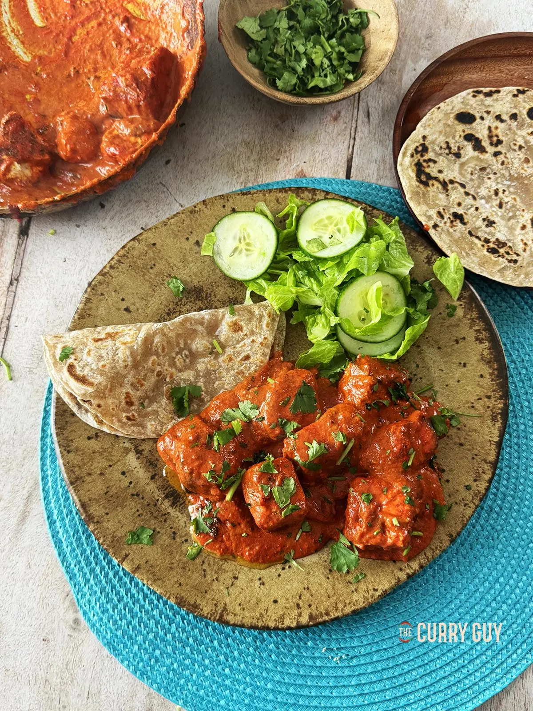

Home
Paneer Tikka Masala Recipe

Description
Make classic Paneer Tikka Masala at home, just like the one you get at your favorite Indian restaurant. This Paneer Tikka Masala is super flavorful, delicious and easy to make! With soft melt-in-the-mouth tender chunks of marinated chargrilled paneer swimming in a flavorsome spicy & creamy gravy, it is sure going to be your family favorite. This Paneer Tikka Masala is a fantastic dinner option if you plan on eating something Indian.
Ingredients
- 3 tbsp ghee or rapeseed (canola) oil
- 1 tbsp garlic and ginger paste
- 1/2 tbsp sugar (more or less to taste)
- 1 tbsp ground almonds
- 1 tbsp coconut flour
- 70ml (1/4 cup) passata
- 1 tbsp mixed powder
- 1 tbsp tandoori masala
- 1/2 - 1 tbsp paprika
- 300ml (1 1/2 cups) base curry sauce
- 300g (11 oz) tandoori paneer tikka
- 100ml (scant 1/3 cup) single cream (more or less to taste)
- 1 tsp red food colouring powder (optional)
- Juice of one lemon
- Salt to taste
- 1/2 tsp dried fenugreek leaves (kasoori methi)
- 1/2 tsp garam masala
- 2 tbsp chopped coriander (cilantro) to taste
Instruction
- Heat the ghee/oil in a frying pan over medium high heat
- When visibly hot, add the garlic and ginger paste and stir well for about 30 seconds to cook out the rawness.
- Add the coconut flour, sugar, ground almonds, mixed powder, tandoori masala and paprika and stir it into the garlic and ginger.
- Pour in the tomato puree and bring to a simmer. Then add about a ladle of base curry sauce. You will need to top this up from time to time. If the curry is looking too dry, add more base sauce. If too saucy, cook it down.
- Bring this all to a bubbling simmer and then add the paneer tikka. Stir well to coat the paneer with the sauce. Remember to add more base if it is looking dry. Scrape around the edges of the pan as the base sauce caramelises to the side. This will add a delicious flavour to your paneer tikka masala.
- Now add the kasoori methi by rubbing it between your fingers into the sauce and add the food colouring, if using.
- Continue stirring to colour the sauce adding more of the heated curry sauce when required.
- Simmer for about a minute and pour in the cream.
- Top with the butter and season with salt to taste and finish with a squeeze of lemon to taste and the garam masala.